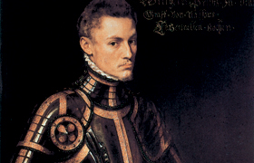

Lezione 13  Imperi Coloniali
Imperi Coloniali

Nel 1581 nacque la Repubblica delle Province Unite, che si proclamò indipendente dalla Spagna cattolica di Filippo II dopo la rivoluzione iniziata nel 1566 e guidata da Guglielmo d’Orange. Sostenute dall’Inghilterra protestante, le Province Unite avevano una fiorente attività economica e rappresentavano una zona di grande pluralismo religioso, in cui convivevano cattolici, calvinisti, luterani.
Dopo l’indipendenza, e per tutto il Seicento, le Province Unite divennero una delle maggiori potenze mondiali. Crearono un immenso impero coloniale e una flotta altrettanto imponente. Svilupparono le arti e le scienze, avevano una classe borghese in forte ascesa spinta da una dinamica e inarrestabile iniziativa imprenditoriale. La città di Amsterdam fu il cuore commerciale e industriale dell’Europa. Lo sviluppo culturale e la libertà intellettuale fecero dell’Olanda il Paese più avanzato e all’avanguardia dell’Europa del Seicento, che passò alla storia come il secolo d’oro olandese.
Riportiamo qui di seguito il testo della proclamazione d’indipendenza delle Province Unite del 1581:
«Non avendo alcuna speranza di riconciliazione e non trovando alcun altro rimedio, noi siamo stati costretti in conformità della legge di natura, a nostra difesa e per mantenere i diritti, i privilegi, le libertà dei nostri concittadini, delle nostre mogli e dei nostri figli e dei nostri discendenti, siamo stati costretti per non essere resi schiavi dagli spagnoli, a rifiutare l’obbedienza e sudditanza al Re di Spagna e a prendere le misure che ci sembreranno opportune per conservare le nostre antiche libertà e privilegi.
Sia noto a tutti con questa dichiarazione, che essendo stati ridotti a questo estremo, come si è detto innanzi noi abbiamo unanimemente e formalmente dichiarato, e con questo atto presente dichiariamo che il Re di Spagna ha perduto ogni diritto ereditario alla sovranità di questi paesi, e siamo decisi d’ora innanzi a non riconoscere la sua sovranità e giurisdizione né alcun suo atto relativo ai territori dei Paesi Bassi, né a far uso del suo nome come principe, né a sopportare che altri lo faccia.
In conseguenza noi dichiariamo anche che tutti gli ufficiali, giudici, signori, gentiluomini, vassalli e tutti gli altri abitanti di questo paese di qualsiasi qualità e condizione sono d’ora innanzi sciolti da ogni giuramento ed obbligo nei confronti del Re di Spagna come sovrano di questi paesi».